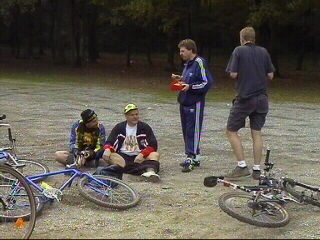

|
Mountainbiken Koempels Z16 Brunssummerhei 13 oktober 2002 |
Beavis repareert de gripshift van Jacobus.
Er zijn prachtige mountainbike-routes uitgezet in
dit natuurgebied.
Soms was het parcours iets te hoog gegrepen.
Koempel en Bill zijn gecrasht.

Jacobus maakt van de gelegenheid gebruik om
de verbruikte koolhydraten aan te vullen.
Verder door de mooie natuur.
Bill reed lek op een punaise. Beavis b
Bill reed lek op een punaise. Beavis brengt een
reserveband aan.
Recoveren bij Beavis...
... met een welverdiende verfrissing.
Nadat iedereen opgefrist was gingen we naar
Italiaans restaurant Salvatore te Hoensbroek
alwaar zich inmiddels Martine, Moniek, Marco,
Flashgirl en Koot vervoegd hadden.